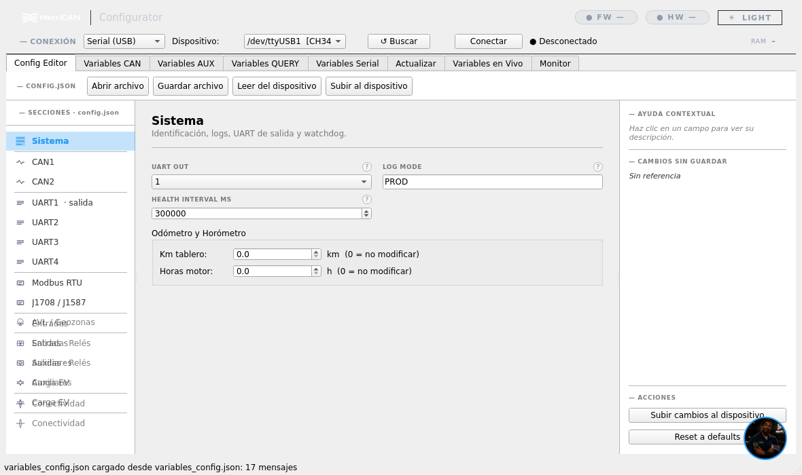
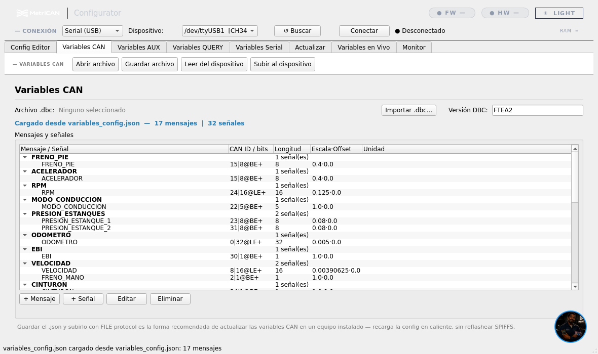
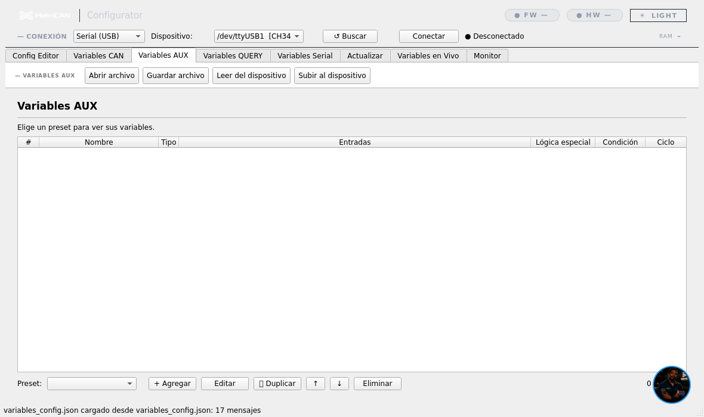
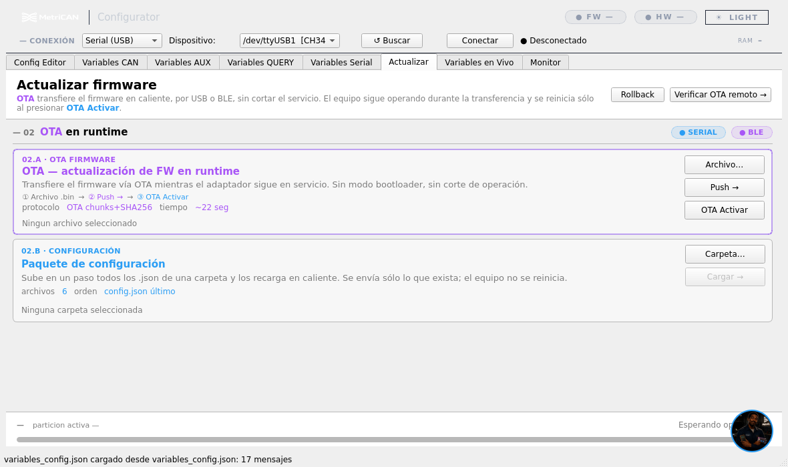
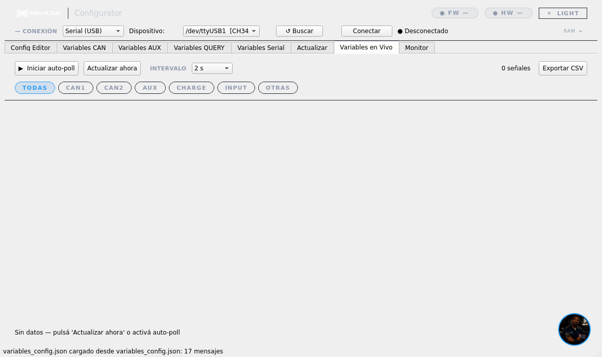
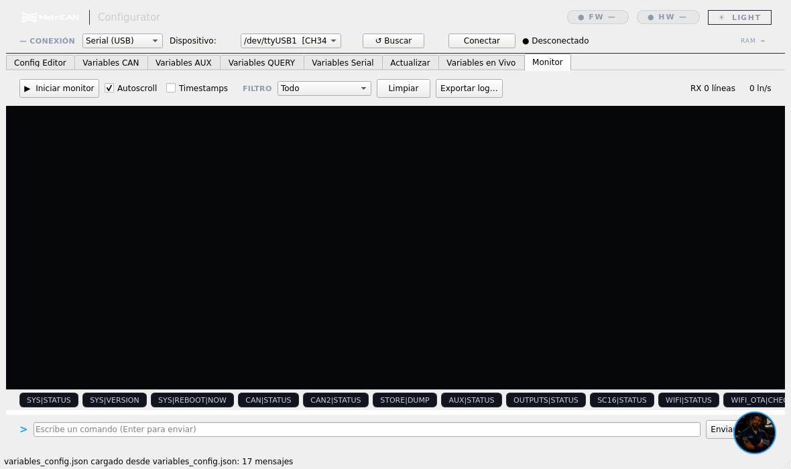

REV 01 · AGO 2026
Guía del Configurador
MetriCAN Configurator es la aplicación de PC desde la que se lee, edita y carga toda la configuración del equipo: qué señales decodifica del bus, qué variables calcula a bordo, cuándo mueve un relé y por dónde entrega los datos. Se conecta por cable USB o por Bluetooth, sin desmontar nada.

La barra superior
Todo empieza arriba: se elige el modo de conexión, el dispositivo y se pulsa Conectar. El indicador de la derecha pasa de Desconectado a conectado, y recién ahí los botones de lectura y escritura tienen efecto.
En un equipo ya instalado, la primera acción siempre es Leer del dispositivo. Editar sobre un formulario en blanco y subirlo reemplaza la configuración que estaba funcionando.
REV 01 · AGO 2026
El corazón de la configuración
Es config.json con formularios en vez de llaves y comas. La columna izquierda son las secciones; la derecha, los campos de la sección elegida. El panel de la derecha muestra ayuda contextual al hacer clic en un campo, y lleva la cuenta de los cambios sin guardar.

| Sección | Qué se define ahí |
|---|---|
| Sistema | Nombre y grupo del equipo, uart_out, nivel de log, odómetro y horómetro iniciales |
| CAN1 · CAN2 | Habilitación y velocidad de cada bus |
| UART1 … UART4 | Qué periférico atiende cada puerto serie. UART1 viene marcado como salida |
| Modbus RTU · J1708 | Buses industriales y protocolo pesado legacy |
| AVL / Geozonas | Lectura del AVL y límites por zona geográfica |
| Entradas · Salidas | La entrada digital y las reglas de relé |
| Auxiliares · Carga EV | Variables calculadas a bordo y monitoreo de carga eléctrica |
| Conectividad | WiFi y Bluetooth |
Guardar archivo deja un .json en tu PC. Subir al dispositivo es lo que cambia el equipo. Son dos acciones distintas y conviene hacer las dos: el archivo es tu respaldo.
REV 01 · AGO 2026
Qué señales lee del bus
Aquí se define qué mensajes del bus interesan y cómo se traduce cada uno a un valor con unidad. Se puede importar un archivo DBC del fabricante y quedarse con las señales necesarias, o construir la lista a mano mensaje por mensaje.

| Columna | Qué significa |
|---|---|
| Mensaje / Señal | Los mensajes agrupan señales. Cada fila hija es un dato que el equipo va a publicar |
| CAN ID / bits | Identificador del mensaje y, en la señal, su posición y orden de bytes |
| Longitud | Cuántos bits ocupa la señal |
| Escala · Offset | La conversión a unidad real: valor = crudo × escala + offset |
| Unidad | Cómo se reporta — km/h, °C, kPa |
El campo Versión DBC de la esquina identifica el juego de variables cargado. Ponerle un nombre con sentido —el modelo y la revisión— es lo que después permite saber qué tiene cada unidad de la flota sin conectarse a ella.
REV 01 · AGO 2026
Los KPI que el bus no entrega
Una variable auxiliar es un dato que no existe en el bus y se construye a bordo combinando señales, acumulando en el tiempo o contando eventos. El equipo la calcula solo y la emite junto al resto.

| Tipo | Para qué sirve |
|---|---|
| accumulator | Integra un valor en el tiempo — energía consumida, distancia recorrida |
| counter | Cuenta eventos al cruzar un umbral — frenadas bruscas, aperturas de puerta |
| horometer | Mide tiempo activo bajo una condición — horas de motor, tiempo en ralentí |
| instantaneous | Calcula en cada ciclo — potencia como tensión × corriente |
| min · max · average | Extremos y promedio del ciclo de operación |
El ciclo es lo que da sentido a los acumuladores: cuando la señal de reseteo cambia —típicamente al apagarse el motor— el equipo emite el resumen del ciclo terminado y vuelve los acumuladores a cero. Un ciclo de operación, un resumen.
Cuando hay que preguntar, y cuando llega solo
- Para datos que no se emiten solos al bus
- El equipo pregunta y espera la respuesta
- Típico de diagnóstico y parámetros bajo demanda
- Datos que llegan por un puerto serie, no por CAN
- Se declara qué mensajes esperar y cómo interpretarlos
- Entran al sistema igual que las del bus
REV 01 · AGO 2026
Firmware nuevo sin desmontar el equipo
Carga una versión de firmware en el equipo por el mismo cable o por Bluetooth con que lo configuras. No hace falta programador ni abrir la carcasa.

Durante la carga el LED del equipo parpadea rápido, cada 100 ms. Mientras dure ese patrón, no desconectes la alimentación ni el cable. El equipo guarda la versión nueva en un espacio aparte y sólo la activa cuando la recibió completa, pero un corte a mitad obliga a repetir el proceso desde el principio.
El equipo conserva la versión anterior. Si la nueva no arranca correctamente, vuelve solo a la que estaba funcionando. Por eso la actualización por cable es una operación segura incluso en terreno.
REV 01 · AGO 2026
La verificación que cierra la instalación
Muestra los valores que el equipo está leyendo en este momento, ya decodificados. Es la prueba de que la configuración es correcta y de que el cableado también: si la lista se actualiza, el equipo lee el bus.

REV 01 · AGO 2026
El diálogo en crudo
Muestra el intercambio tal cual viaja por el puerto: lo que el equipo emite y lo que recibe. Cuando algo no calza y las Variables en Vivo no alcanzan para explicarlo, el Monitor es donde se ve qué está pasando de verdad. Es también lo primero que pide soporte.

Earl Cooper
El botón circular de la esquina inferior derecha abre el asistente técnico integrado en la aplicación: responde consultas sobre configuración, protocolos y diagnóstico sin salir del Configurador. Requiere una clave de servicio propia, que se introduce la primera vez.
¿Una configuración que no logras armar?
Envíanos el .json guardado y una captura del Monitor. Con eso se reproduce el caso sin tener el equipo delante.